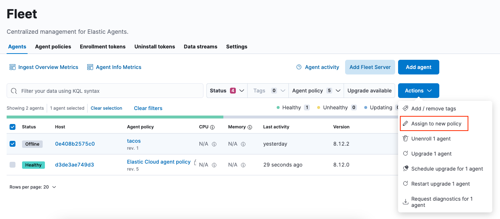

Elastic Agent policies
editElastic Agent policies
editA policy is a collection of inputs and settings that defines the data to be collected by an Elastic Agent. Each Elastic Agent can only be enrolled in a single policy.
Within an Elastic Agent policy is a set of individual integration policies. These integration policies define the settings for each input type. The available settings in an integration depend on the version of the integration in use.
Fleet uses Elastic Agent policies in two ways:
- Policies are stored in a plain-text YAML file and sent to each Elastic Agent to configure its inputs.
- Policies provide a visual representation of an Elastic Agents configuration in the Fleet UI.
Policy benefits
editElastic Agent policies have many benefits that allow you to:
- Apply a logical grouping of inputs aimed for a particular set of hosts.
- Maintain flexibility in large-scale deployments by quickly testing changes before rolling them out.
- Provide a way to group and manage larger swaths of your infrastructure landscape.
For example, it might make sense to create a policy per operating system type: Windows, macOS, and Linux hosts. Or, organize policies by functional groupings of how the hosts are used: IT email servers, Linux servers, user work-stations, etc. Or perhaps by user categories: engineering department, marketing department, etc.
Policy types
editIn most use cases, Fleet provides complete central management of Elastic Agents. However some use cases, like running in Kubernetes or using our hosted Elasticsearch Service on Elastic Cloud, require Elastic Agent infrastructure management outside of Fleet. With this in mind, there are two types of Elastic Agent policies:
- regular policy: The default use case, where Fleet provides full central management for Elastic Agents. Users can manage Elastic Agent infrastructure by adding, removing, or upgrading Elastic Agents. Users can also manage Elastic Agent configuration by updating the Elastic Agent policy.
-
hosted policy: A policy where something else provides central management for Elastic Agents. For example, in Kubernetes, adding, removing, and upgrading Elastic Agents should be configured directly in Kubernetes. Allowing Fleet users to manage Elastic Agents would conflict with any Kubernetes configuration.
Hosted policies also apply when using our hosted Elasticsearch Service on Elastic Cloud. Elastic Cloud is responsible for hosting Elastic Agents and assigning them to a policy. Platform operators, who create and manage Elastic deployments can add, upgrade, and remove Elastic Agents through the Elastic Cloud console.
Hosted policies display a lock icon in the Fleet UI, and actions are restricted. The following table illustrates the Fleet user actions available to different policy types:
| Fleet user action | Regular policy | Hosted policy |
|---|---|---|
|
|
|
|
|
|
|
|
|
|
|
|
|
|
|
|
|
|
|
|
|
|
|
|
|
|
|
|
|
|
|
|
|
|
|
|
|
|
|
|
|
|
|
|
|
|
|


See also the recommended scaling options for an Elastic Agent policy.
Create a policy
editTo manage your Elastic Agents and the data they collect, create a new policy:
In Fleet, open the Agent policies tab and click Create agent policy. . Name your policy. All other fields are optional and can be modified later. By default, each policy enables the system integration, which collects system information and metrics.
+

+ . Create the agent policy: * To use the UI, click Create agent policy. * To use the Fleet API, click Preview API request and run the request.
Also see Create an agent policy without using the UI.
Add an integration to a policy
editPolicies consist of one or more integrations. To add a new integration to a policy:
- In Fleet, click Agent policies. Click the name of the policy you want to add an integration to.
- Click Add integration.
- Search for and select an integration. You can select a category to narrow your search.
- Click Add <Integration>.
-
Name the integration and add any required configuration variables.
Integration policy names must be globally unique across all agent policies.
-
Save the integration policy as part of the larger Elastic Agent policy:
- To use the UI, click Save and continue.
- To use the Fleet API, click Preview API request and run the request.
Fleet distributes this new policy to all Elastic Agents that are enrolled in the Elastic Agent policy.
After the policy has finished applying, the selected integration will be running on the host and communicating with the Elastic Agent.
Apply a policy
editYou can apply policies to one or more Elastic Agents. To apply a policy:
- In Fleet, click Agents.
-
Select the Elastic Agents you want to assign to the new policy.
After selecting one or more Elastic Agents, click Assign to new policy under the Actions menu.
Unable to select multiple agents? Confirm that your subscription level supports selective agent policy reassignment in Fleet. For more information, refer to Elastic Stack subscriptions.
- Select the Elastic Agent policy from the dropdown list, and click Assign policy.
The Elastic Agent status indicator and Elastic Agent logs indicate that the policy is being applied. It may take a few minutes for the policy change to complete before the Elastic Agent status updates to "Healthy".
Edit or delete an integration policy
editIntegrations can easily be reconfigured or deleted. To edit or delete an integration policy:
- In Fleet, click Agent policies. Click the name of the policy you want to edit or delete.
-
Search or scroll to a specific integration. Open the Actions menu and select Edit integration or Delete integration.
Editing or deleting an integration is permanent and cannot be undone. If you make a mistake, you can always re-configure or re-add an integration.
Any saved changes are immediately distributed and applied to all Elastic Agents enrolled in the given policy.
To update any secret values in an integration policy, refer to Configure secret values in a policy.
Copy a policy
editPolicy definitions are stored in a plain-text YAML file that can be downloaded or copied to another policy:
- In Fleet, click Agent policies. Click the name of the policy you want to copy or download.
-
To copy a policy, click Actions → Copy policy. Name the new policy, and provide a description. The exact policy definition is copied to the new policy.
Alternatively, view and download the policy definition by clicking Actions → View policy.
Edit or delete a policy
editYou can change high-level configurations like a policy’s name, description, default namespace, and agent monitoring status as necessary:
- In Fleet, click Agent policies. Click the name of the policy you want to edit or delete.
-
Click the Settings tab, make changes, and click Save changes
Alternatively, click Delete policy to delete the policy. Existing data is not deleted. Any agents assigned to a policy must be unenrolled or assigned to a different policy before a policy can be deleted.
Add custom fields
editUse this setting to add a custom field and value set to all data collected from the Elastic Agents enrolled in an Elastic Agent policy. Custom fields are useful when you want to identify or visualize all of the data from a group of agents, and possibly manipulate the data downstream.
To add a custom field:
- In Fleet, click Agent policies. Select the name of the policy you want to edit.
- Click the Settings tab and scroll to Custom fields.
- Click Add field.
-
Specify a field name and value.
- Click Add another field for additional fields. Click Save changes when you’re done.
To edit a custom field:
- In Fleet, click Agent policies. Select the name of the policy you want to edit.
- Click the Settings tab and scroll to Custom fields. Any custom fields that have been configured are shown.
- Click the edit icon to update a field or click the delete icon to remove it.
Note that adding custom tags is not supported for a small set of inputs:
-
apm -
cloudbeatand allcloudbeat/*inputs -
cloud-defend -
fleet-server -
pf-elastic-collector,pf-elastic-symbolizer, andpf-host-agent
Enable agent monitoring
editUse this setting to collect monitoring logs and metrics from Elastic Agent. All monitoring data will be written to the specified Default namespace.
- In Fleet, click Agent policies. Select the name of the policy you want to edit.
- Click the Settings tab and scroll to Enable agent monitorings.
- Select whether to collect agent logs, agent metrics, or both, from the Elastic Agents that use the policy.
When this setting is enabled an Elastic Agent integration is created automatically.
Change the output of a policy
editAssuming your Elastic Stack subscription level supports per-policy outputs, you can change the output of a policy to send data to a different output.
- In Fleet, click Settings and view the list of available outputs. If necessary, click Add output to add a new output with the settings you require. For more information, refer to Output settings.
- Click Agent policies. Click the name of the policy you want to change, then click Settings.
-
Set Output for integrations and (optionally) Output for agent monitoring to use a different output, for example, Logstash. You might need to scroll down to see these options.
Unable to select a different output? Confirm that your subscription level supports per-policy outputs in Fleet.

- Save your changes.
Any Elastic Agents enrolled in the agent policy will begin sending data to the specified outputs.
Add a Fleet Server to a policy
editIf you want to connect multiple agents to a specific on-premises Fleet Server, you can add that Fleet Server to a policy.

When the policy is saved, all agents assigned to the policy are configured to use the new Fleet Server as the controller.
Make sure that the Elastic Agents assigned to this policy all have connectivity to the Fleet Server that you added. Lack of connectivity will prevent the Elastic Agent from checking in with the Fleet Server and receiving policy updates, but the agents will still forward data to the cluster.
Configure secret values in a policy
editWhen you create an integration policy you often need to provide sensitive information such as an API key or a password. To help ensure that data can’t be accessed inappropriately, any secret values used in an integration policy are stored separately from other policy details.
As well, after you’ve saved a secret value in Fleet, the value is hidden in both the Fleet UI and in the agent policy definition. When you view the agent policy (Actions → View policy), an environment variable is displayed in place of any secret values, for example ${SECRET_0}.
In order for sensitive values to be stored secretly in Fleet, all configured Fleet Servers must be on version 8.10.0 or higher.
Though secret values stored in Fleet are hidden, they can be updated. To update a secret value in an integration policy:
- In Fleet, click Agent policies. Select the name of the policy you want to edit.
- Search or scroll to a specific integration. Open the Actions menu and select Edit integration. Any secret information is marked as being hidden.
-
Click the link to replace the secret value with a new one.

- Click Save integration. The original secret value is overwritten in the policy.
Set the maximum CPU usage
editYou can limit the amount of CPU consumed by Elastic Agent. This parameter limits the number of operating system threads that can be executing Go code simultaneously in each Go process. You can specify an integer value not less than 0, which is the default value that stands for "all available CPUs".
This limit applies independently to the agent and each underlying Go process that it supervises. For example, if Elastic Agent is configured to supervise two Beats with a CPU usage limit of 2 set in the policy, then the total CPU limit is six, where each of the three processes (one Elastic Agent and two Beats) may execute independently on two CPUs.
This setting is similar to the Beats max_procs setting. For more detail, refer to the GOMAXPROCS function in the Go runtime documentation.
- In Fleet, click Agent policies. Select the name of the policy you want to edit.
- Click the Settings tab and scroll to Advanced settings.
-
Set Limit CPU usage as needed. For example, to limit Go processes supervised by Elastic Agent to two operating system threads each, set this value to
2.
Override the default monitoring port
editYou can override the default port that Elastic Agent uses to send monitoring data. It’s useful to be able to adjust this setting if you have an application running on the machine on which the agent is deployed, and that is using the same port.
- In Fleet, click Agent policies. Select the name of the policy you want to edit.
- Click the Settings tab and scroll to Advanced settings.
- Specify a host and port for the monitoring data output.
Set the Elastic Agent log level
editYou can set the minimum log level that Elastic Agents using the selected policy will send to the configured output. The default setting is info.
- In Fleet, click Agent policies. Select the name of the policy you want to edit.
- Click the Settings tab and scroll to Advanced settings.
- Set the Agent logging level.
- Save your changes.
You can also set the log level for an individual agent:
- In Fleet, click Agents. Under the Host header, select the Elastic Agent you want to edit.
- On the Logs tab, set the Agent logging level and apply your changes. Or, you can choose to reset the agent to use the logging level specified in the agent policy.
Change the Elastic Agent binary download location
editElastic Agents must be able to access the Elastic Artifact Registry to download
binaries during upgrades. By default Elastic Agents download artifacts from the
artifact registry at https://artifacts.elastic.co/downloads/.
For Elastic Agents that cannot access the internet, you can specify agent binary download settings, and then configure agents to download their artifacts from the alternate location. For more information about running Elastic Agents in a restricted environment, refer to Air-gapped environments.
To change the binary download location:
- In Fleet, click Agent policies. Select the name of the policy you want to edit.
- Click the Settings tab and scroll to Agent binary download.
- Specify the address where you are hosting the artifacts repository or select the default to use the location specified in the Fleet agent binary download settings.
Set the Elastic Agent host name format
editThe Host name format setting controls the format of information provided about the current host through the host.name key, in events produced by Elastic Agent.
- In Fleet, click Agent policies. Select the name of the policy you want to edit.
- Click the Settings tab and scroll to Host name format.
-
Select one of the following:
-
Hostname: Information about the current host is in a non-fully-qualified format (
somehost, rather thansomehost.example.com). This is the default reporting format. -
Fully Qualified Domain Name (FQDN): Information about the current host is in FQDN format (
somehost.example.comrather thansomehost). This helps you to distinguish between hosts on different domains that have similar names. The fully qualified hostname allows each host to be more easily identified when viewed in Kibana, for example.
-
Hostname: Information about the current host is in a non-fully-qualified format (
- Save your changes.
FQDN reporting is not currently supported in APM.
For FQDN reporting to work as expected, the hostname of the current host must either:
- Have a CNAME entry defined in DNS.
- Have one of its corresponding IP addresses respond successfully to a reverse DNS lookup.
If neither pre-requisite is satisfied, host.name continues to report the hostname of the current host in a non-fully-qualified format.
Policy scaling recommendations
editA single instance of Fleet supports a maximum of 500 Elastic Agent policies. If more policies are configured, UI performance might be impacted.